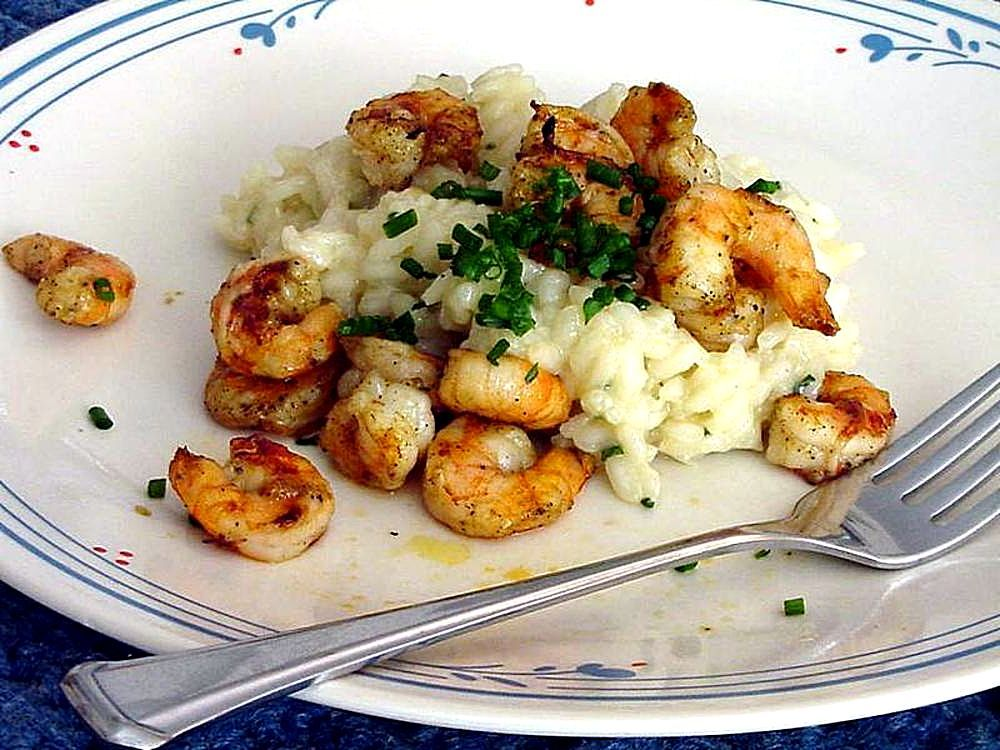

Home
Spicy Lime Grilled Shrimp

Description
Juicy shrimp marinated in zesty lime, garlic, and spices, then grilled to perfection. A flavorful blend of smoky heat and bright citrus makes every bite irresistibly delicious.
Ingredients:
- 1 lb medium shrimp, peeled and deveined
- Juice of 1 lime
- 3 tbsp Cajun seasoning
l
- 1 tbsp vegetable oil
Steps:
- In a large resealable bag or bowl, combine the lime juice, Cajun seasoning, and vegetable oil.
- Add the shrimp and toss until evenly coated.
- Preheat the grill to medium-high heat and lightly oil the grill grate.
- Remove the shrimp from the marinade and shake off any excess. Discard the remaining marinade.
- Place the shrimp on the grill and cook for about 2 minutes per side, or until the shrimp are pink and opaque.
- Remove from the grill and serve immediately with fresh lime wedges if desired.